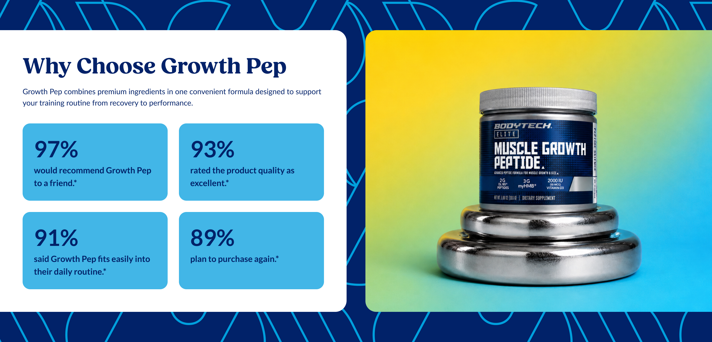
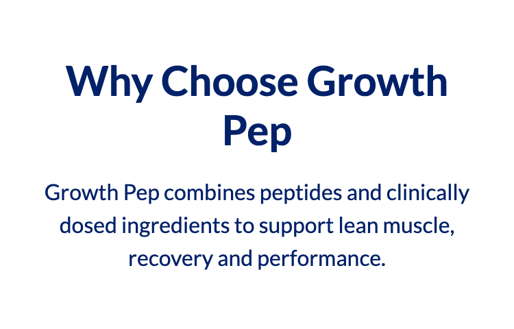
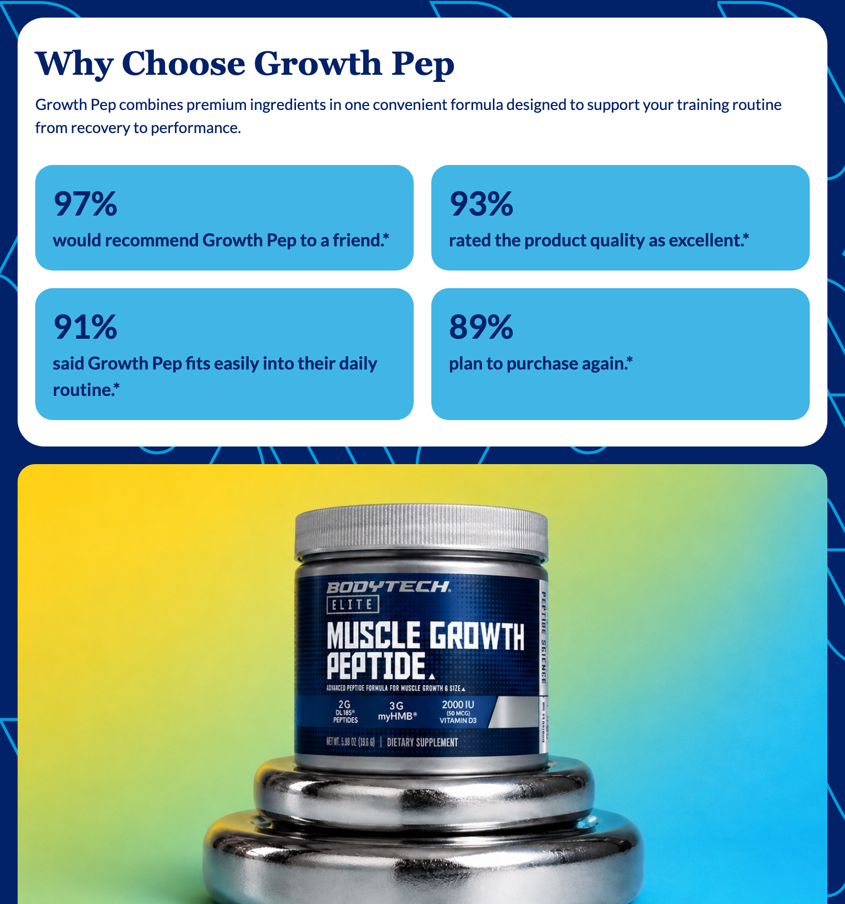

Platter component
Stat Highlights
Transcribed from Confluence, authored by Sarah Lee. It is the client's spec, reproduced verbatim in substance. The source table carries five columns — Content Type, Functional Requirement, Character Count, Asset/Copy Requirement, Responsive & Content Behavior — and is reproduced with all five; a - is the page's own empty-cell marker and is kept as written, while a cell the page leaves genuinely blank is blank here too. Where a source cell holds bullets they are run together as sentences.
Spec: https://getplatter.atlassian.net/wiki/spaces/TVS/pages/940998696/FSD+Stat+Highlights
02 — Screenshots
How it renders
Wipe the handle across the design to find where the build drifts from it. The Figma frame and the capture are exported at the same width, so anything that moves under the handle is a real difference. Every width is below as a plain capture.



03 — Fields
What a merchandiser fills in
Generated from _schema.ts, in the order Amplience shows them.
| Field | Type | Constraints | Description | |
|---|---|---|---|---|
headingHeading |
string | required | max 70 min 1 |
The headline above the statistics, e.g. "Why Choose Growth Pep". Wrap words in _underscores_ for italic and **double asterisks** for bold. Write ~12~ for subscript; a registered mark (®) is raised automatically, and a plain asterisk is never formatting. It wraps to a second line rather than shrinking, and the card grows to fit — which also makes the photograph beside it taller. |
headingLevelHeading level |
string | h1 · h2 · h3default "h2" |
Choose h1 only if this module is the first thing on the page and no other h1 exists. Otherwise leave it as h2 — two h1s on one page hurts SEO. Choose h3 when the module sits underneath a section that already has an h2, so the page's heading order stays unbroken. This changes nothing you can see: the size is set separately below. | |
headingSizeHeading size (desktop / mobile) |
string | 64px / 38px · 56px / 34px · 48px / 30px · 36px / 24px · 28px / 20px · 20px / 16pxdefault "48px / 30px" |
A fixed pair from the TVS type scale — the first size applies from tablet up, the second on phones. | |
headingFontHeading font |
string | Lato · corisanderegular · Fieldsdefault "Fields" |
Fields is the serif this module is designed in and is the default. It is not yet installed on vitaminshoppe.com, so until it is, the heading falls back to Georgia — still a serif, but not the exact drawn face. Pick Lato if you would rather the heading match the rest of the site exactly than approximate the design. | |
bodyDescription |
string | max 220 | One or two sentences under the headline, setting up what the figures show. Wraps rather than truncating. Formatting: **bold**, _italic_, and ~12~ for subscript. A registered mark (®) is raised automatically, and a plain asterisk is never formatting, so a footnote marker like 20%* is safe. Leave it empty and the card shrinks around what is left, keeping the heading and statistics vertically centred against the photograph. | |
statsStatistics |
array | required | Between two and four figures, shown in the order you list them here. Drag a row to reorder it. They sit two across on every screen size, phones included, and never stack into a single column. Two fill one row and shorten the whole module; four fill two rows; three leave the last one centred under the pair above it. Every figure needs both a number and a caption. | |
imagePhotograph |
string | required | min 1 | Full URL of the photograph beside the statistics. jpg, jpeg or png. It matches the card's height, so it is taller with four figures than with two — the design is 736 × 598 and 736 × 410 — and is cropped to fit rather than squashed, so keep the product near the centre. On phones it moves below the card at 343 × 257. Product shots and decorative detail belong here, never text: text must stay real HTML so search and AI crawlers can read it. |
imageAltPhotograph alt text |
string | required | min 1 | Describe what the photograph shows, e.g. "BodyTech Elite Muscle Growth Peptide tub resting on a stack of weight plates". Required for accessibility. Do not write "image of" — a screen reader already says that. |
decorativePatternDecorative background |
string | max 500 | Full URL of the patterned artwork behind the card and photograph. The design is a repeating light-blue ribbon on navy; whatever you upload is tiled the same way, so supply one tile rather than a full-width image. SVG keeps its edges sharp at any width; jpg and png work too. It sits behind the content and is decoration, so it needs no alt text — do not put anything readable in it. Leave empty to show the plain navy background. | |
decorativePatternMobileDecorative background (mobile) |
string | max 500 | Full URL of the phone version of the pattern. Falls back to the desktop artwork when empty, which is usually right — supply one only if the tile is too dense to read at phone width. | |
priorityPrioritise image loading |
boolean | default false |
Switch on when this module is the first thing on the page, so the photograph loads immediately instead of lazily. | |
sectionIdSection ID |
string | max 50^[a-z][a-z0-9-]*$ |
A name for this specific module, used for two things. A link anywhere on the site can jump straight to it by ending the URL with # and this name, e.g. #clinical-results. Page-level CSS can also target this one module rather than every stat highlights. Use lowercase letters, numbers and hyphens, start with a letter, and make it unique on the page — two modules sharing an ID will break the jump link. Leave empty if you need neither. |
04 — Sample content
A filled-in example
From _content.json. This is what the screenshots above are rendering.
{
"heading": "Why Choose Growth Pep",
"headingLevel": "h2",
"headingSize": "48px / 30px",
"headingFont": "Fields",
"body": "Growth Pep combines premium ingredients in one convenient formula designed to support your training routine from recovery to performance.",
"stats": [
{
"value": "97%",
"description": "would recommend Growth Pep to a friend.*"
},
{
"value": "93%",
"description": "rated the product quality as excellent.*"
},
{
"value": "91%",
"description": "said Growth Pep fits easily into their daily routine.*"
},
{
"value": "89%",
"description": "plan to purchase again.*"
}
],
"image": "../assets/hero-split-4x3-1448.jpg",
"imageAlt": "BodyTech Elite Muscle Growth Peptide tub resting on a stack of weight plates",
"decorativePattern": "../assets/stat-ribbon-tile-652.svg",
"priority": false,
"sectionId": "stat-highlights"
}05 — Design reference
Design reference
| Variant | Desktop | Mobile |
|---|---|---|
| Four stats | Figma 18363:120863 — 1512 × 726 | Figma 18363:125707 — 375 × 856 |
| Two stats | Figma 18363:126014 — 1512 × 538 | Figma 18363:130868 — 375 × 672 |
Composition. Desktop is a horizontal split of two equal 736-wide columns with a 40 gap: a white card at x 0 and a photograph at x 776, both y 64 and both the full height of the module's content box. Each bleeds off its own outer edge — the card's left corners are square and the photograph's right corners are square — so only the two inner corners are rounded. Frame padding is 64 top and bottom and none at the sides. Mobile stacks them: the card at x 16, y 16, 343 wide with all four corners rounded, then the photograph below it at 343 × 257, also inset 16 at the sides, running flush to the bottom of the frame with only its top corners rounded. Card → photograph gap 16.
The two-stat variant is the four-stat frame with the second tile row hidden. Nothing else moves: the card and the photograph both shorten from 598 to 410 on desktop, and the mobile photograph stays 343 × 257 at both counts.
Blocks, in order, both views: heading → description → stat tiles → photograph. Hidden layers in the file (preheading, subheading, labels, reviews badge, an actions row holding two buttons, a second features list, and an icon button inside every tile) are not part of the design and are not measured. The absent actions row is the file's own confirmation that this module carries no CTA.
| Element | Desktop | Mobile |
|---|---|---|
| Card | 736 × 598 (four stats) / 736 × 410 (two stats); fill sections/background-main #FFFFFF; radius 24 on the right corners only, 0 on the left; padding 48 | 343 × 567 / 343 × 383; same fill; radius 24 on all four corners; padding 16 horizontal, 24 vertical |
| Heading | richtext-md/H1/bold fields: Fields 48 / 700 / 1.2, tracking 0, #012169, 640 wide, one line | Fields 30 / 700 / 1.2, 311 wide, two lines |
| Heading → description gap | 12 | 8 |
| Description | richtext-md/P1/regular lato: Lato 16 / 400 / 1.5, #012169, 640 wide, two lines | Lato 14 / 400 / 1.5, 311 wide, three lines |
| Description → tiles gap | 32 | 24 |
| Tile grid | two across, two rows; 640 × 352; column gap 24, row gap 24 | two across, two rows; 311 × 352; column gap 16, row gap 16 |
| Stat tile | 308 × 164; fill sections/background-accent #41B6E6; radius 16; padding 24; content column 260 | 147.5 × 168; same fill and radius; padding 16; content column 115.5 |
| Stat value | richtext-md/H1/bold lato: Lato 48 / 700 / 1.2, tracking 0, #012169 | Lato 30 / 700 / 1.2 |
| Value → caption gap | 4 | 4 |
| Stat caption | richtext-md/H5/bold lato: Lato 18 / 700 / 1.5, #012169; two lines at 260 wide | Lato 16 / 700 / 1.5; up to four lines at 115.5 wide |
| Photograph | 736 × 598 / 736 × 410; radius 16 on the left corners only, 0 on the right; fills the card's height at both stat counts | 343 × 257 at both stat counts; radius 16 on the top corners only, 0 at the bottom |
| Ground | #012169 navy under a repeating light-blue ribbon pattern | same |
Tokens bound in the file: sections/text-main #012169 carries every piece of type in the module, headline and stat value alike; sections/background-main #FFFFFF the card; sections/background-accent #41B6E6 the tiles; typography/family/primary = Fields, secondary = tertiary = Lato; typography/richtext-md/h1 48 / 30, h5 18 / 16, p1 16 / 14; typography/weight/bold 700, regular 400; spacing/spacing-m 24 / 16, spacing/spacing-large 32 / 24, spacing/Container Margin Spacing 2 48; Page Width 1860.
The pattern the desktop frames hide is not the pattern they render. Both carry a Frame 26085648 of four 756 × 676 tiles, hidden in both, and exporting it gives the small "V" mark tile that benefits-highlights already uses — not the ribbon on screen. The ribbon itself is a clipped vector group inside the mobile frame (18363:125708), whose paths carry their full geometry and are merely cropped by a clipPath; removing that clip recovers the whole artwork. It is drawn in #00A0DD, which is not the #41B6E6 the tiles use and is not bound to a Figma variable. Its repeat is 652px, measured two independent ways: autocorrelating the rendered desktop ground, and autocorrelating the recovered vector. templates/assets/stat-ribbon-tile-652.svg is that artwork, cropped to one period, and is the preview sample only — the shipped pattern is a merchandiser upload.
Desktop ↔ mobile diff worth deciding, not measuring: the stack flips from horizontal to vertical and the photograph moves below the card; the card's rounding goes from the right pair to all four and the photograph's from the left pair to the top pair; every type size steps down one pair (48 / 30 heading and stat value, 18 / 16 caption, 16 / 14 description); padding halves (card 48 → 16/24, tile 24 → 16) and every gap steps 24 → 16. The tiles stay two across in both views — they never stack to one column, which is what makes the caption measure fall to 115.5px on a phone and the tile grow to four lines. The 736 / 736 desktop split is the same arithmetic as benefits-highlights, which is documented as unable to flip at 768.
06 — User requirement
User requirement
- User can view the stat blocks; module is non-interactive (view only).
07 — Admin requirement
Admin requirement
| Content Type | Functional Requirement | Character Count | Asset/Copy Requirement | Responsive & Content Behavior |
|---|---|---|---|---|
| Heading (Required) | Admin can edit the section heading. | 30-70 | Wraps to 2 lines on desktop; card expands vertically. | |
| Description (Optional) | Admin can edit the supporting description below the heading. | 100-220 | Wraps rather than truncates. When there is no description, the card shrinks with content center-aligned. | |
| Stat Tiles | Admin can add minimum of 2, and maximum of 4 Stats. Each stat includes: Title Description | 15-40 & 60-160 | - | When fewer than 4 blocks are used, the row centers rather than leaving an empty grid cell; block sizing does not change. With only 2 blocks, they display side-by-side (not stacked), and the height of module is reduced with no extra white space. The image on the right changes its height based on number of stat blocks. |
| Image (Required) | Supporting image, responsive per the spec above. | Desktop 4 block: 736 x 598 px Desktop 2 block: 736 x 410 px Mobile: 343 x 257 px | - | |
| Decorative Background (Required) | Admin can upload an image for desktop and mobile separately. | Supports . SVG |
08 — Other requirements
Other requirements
- Analytics: Component supports automated impression tracking (viewport entry) via the standard
raiseEventhandler.
09 — Open comments
Open comments
The source page carries no comments. Everything below is an ambiguity in the page's own text or a conflict between the page and the frames, recorded as a question rather than resolved.
Sarah Lee — unanswered 2026-08-27
unanswered 2026-08-27
The Stat Tiles row gives a Character Count of "15-40 & 60-160" for "Title Description", and neither range fits the design. In the frames the Title is the large figure — "97%", "93%", "91%", "89%" — which is three characters, well under the stated minimum of 15 and unable to reach 40 without breaking out of a 260px tile at 48px type. The Description is the caption beneath it, and the longest one drawn is "said Growth Pep fits easily into their daily routine.\*" at 53 characters, under the stated minimum of 60 and less than a third of the stated
- Both ranges read as though they were written for a different tile type.
Please confirm the intended caps. We have built to the upper bounds as written, because character limits are treated as mandatory, and stated the real layout limit in each field's description instead.
Sarah Lee — unanswered 2026-08-27
unanswered 2026-08-27
The Heading row gives 30-70 characters, but the heading drawn in every frame is "Why Choose Growth Pep" — 21 characters, below the stated minimum. The same row says the heading "wraps to 2 lines on desktop", which at 48px Fields across a 640px measure needs roughly 40 characters or more; the drawn heading fits on one line. Please confirm whether 30 is a real floor or the design is simply shorter than the spec anticipated.
Sarah Lee — unanswered 2026-08-27
unanswered 2026-08-27
The Decorative Background row says "Admin can upload an image for desktop and mobile separately" and "Supports . SVG", but does not say whether the upload is one tile that the module repeats or a single full-width image. The frames show a repeating ribbon motif, and the pattern layer inside them is hidden, so the file itself carries no tile dimension to build to. We have built it as a repeating tile, matching benefits-highlights. Please confirm, and say whether the field is genuinely Required — a module with no pattern still renders correctly on the plain navy ground.
Sarah Lee — unanswered 2026-08-27
unanswered 2026-08-27
The Image row lists three sizes — 736 × 598, 736 × 410 and 343 × 257 — but the first two differ only in height and are the same picture at two stat counts. It does not say whether the admin uploads two desktop crops, one per count, or a single image the module crops to whichever height applies. We have built the latter, since the count is a consequence of how many stats were entered and not a separate admin choice. Please confirm.
Sarah Lee — unanswered 2026-08-27
unanswered 2026-08-27
Other requirements asks for "automated impression tracking (viewport entry) via the standard raiseEvent handler". This module is view-only, so an impression is its entire analytics surface — but no event name exists for a content module. This is question 15 of our analytics tracking spec review of 17 Aug 2026, still unanswered: view_item_list covers the product modules and nothing covers the content ones. Until an event name is agreed there is nothing to fire, so the module ships with no analytics at all. Please supply the event name and payload.
10 — Deviations
Deviations
Recorded as each was found while building, so the gaps are visible rather than forgotten.
Impression tracking is not built
Not built
The FSD asks for viewport-entry impression tracking. The canonical analytics scope already carries observeImpression(), so the mechanism exists and is in use by the three product-list modules, but it needs an event name and payload to push and neither has been agreed for a content module. Firing an invented event name would put a value into the client's GA4 property that no report reads and that would have to be migrated once the real name arrives. The module therefore carries no analytics scope at all rather than a placeholder event. See the Open comment above; this becomes Corrected once an event name lands.
Heading renders in Georgia until Fields is hosted
Built
The design sets the headline in Fields, so headingFont defaults to it. Fields is not installed on vitaminshoppe.com yet, so until it is the headline falls back to Georgia — still a serif, but not the drawn face. The field's description says so, and a merchandiser who would rather match the rest of the site exactly can pick Lato.
Layout flips at 1024px, not 768px
Built
The desktop composition is two fixed 736px columns with a 40px gap, which is the same arithmetic as benefits-highlights. Halving it at 768 does not shrink the card, it starves it: the content track drops to roughly 340px, which runs the 48px headline to four lines and squeezes each 308px tile below the width its 18px caption needs. The stack therefore flips at lg (1024). The 768-1200 band is undrawn in every TVS design we hold, so this is a choice rather than a measurement — see sections/CLAUDE.md § Breakpoint.
The stacked photograph is capped at 400px through the undrawn band
Built
Stacked, the photograph holds the drawn 343 × 257 ratio, which means its height grows with the viewport while the card above it shrinks — the same copy gains width and so needs fewer lines. At 768 that put a 551px photograph under a 386px card: half again as tall as everything it illustrates, and the module read as a product shot with a caption rather than as a set of statistics. The photograph is therefore capped at 400px until the layout flips at lg, which is roughly the drawn 257 → 598 ramp interpolated to this width and leaves the card and the photograph within 10px of each other at 768. The cap binds only past about 534px wide, so the drawn 375 frame is untouched, and it is lifted at lg so the drawn 598 desktop height is unaffected. The cost is that object-cover crops the stacked photograph more tightly through the band than the phone frame does, where it does not crop at all.
Stat tile character caps follow the FSD, not the drawn copy
Built
The FSD gives the tile's Title 15-40 characters and its Description 60-160, and the drawn copy fits neither — three characters for "97%", and 40 to 53 for the captions. Character limits are treated as mandatory here, so the caps are the FSD's upper bounds exactly: 40 on the figure and 160 on the caption. Neither number is a layout limit. A 40-character figure bursts a 260px tile at 48px type, and a caption past about 90 makes its tile taller than the others in the row. Each field's description states the real limit in the merchandiser's own terms. See the Open comment; the caps change if the client confirms different ones.
One photograph upload, cropped to whichever height applies
Built
The FSD's Image row lists three sizes — 736 × 598, 736 × 410 and 343 × 257 — but the first two are the same picture at two stat counts rather than two separate crops. The module takes one image and lets the photograph track the card's height on desktop, so it shortens by itself when a merchandiser enters two statistics instead of four, and shows the drawn 343 × 257 crop on phones. There is no imageMobile pair. See the Open comment; a second upload is a field to add if the client wants the phone crop framed differently.